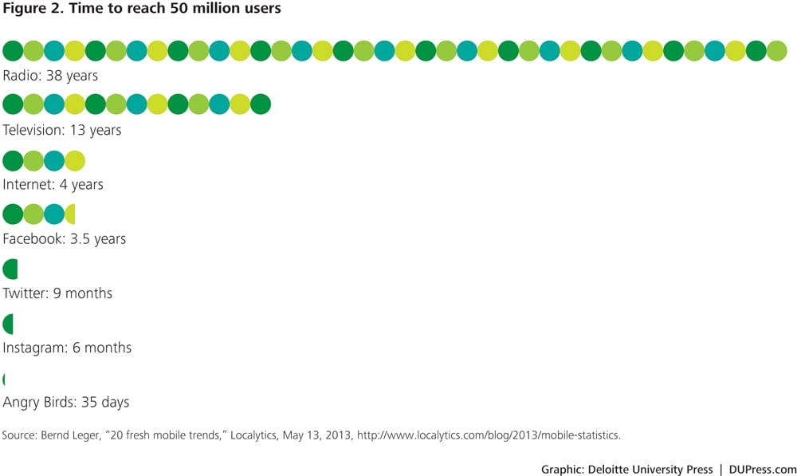

The West African Viral Economy

The first time I saw the logo of this fintech disruptor I thought about Linux and I was sure that the brand designer tried to use the power of analogy because she knew that the first target audience of early adopters of this fintech platform was the African tech enthusiasts and tech-literate whose who really understand how tech assets can be used and managed because once this small audience adopts the fintech solution the startup could use another power which is the network effect, a power that helped so many products and services like fax and phone spread and the effect of this power is amplified by the internet revolution.
We are leaving a viral economy, I think that almost everyone knows that we are and the level of virality of an economy depends on the number of links between the elements that constitute this economy, level of connectedness. Developed countries have achieved a very high level of connectivity between elements of their economies and there are where virality is most impactful but developing countries are where the next viral economies are emerging, here the word emergence really applies. In a viral economy good startup can gain a big part of market share in a week like how angry bird got 50 million users in 35 days, Instagram had the same userbase size in 6 months, Facebook in 3.5 years, and the internet in 4 years. This chart from Deloitte that I related in the last sentence and that is shown below describes how the velocity of product adoption is increasing making products and services being adopted widely in a tighter and tighter timeframe.

this increase of velocity and the reduction of time of adoption is the effect of the internet. Internet adoption in Africa is still in early-stage because from a total population of 1.2 billion, only 565 million (47%) are using mobile services and internet adoption lags further behind, with only 303 million people (25% of the region’s population) accessing the internet via mobile. these 303 million people using the internet via mobile are targeted by fintech platforms like Wave and established telecom market leaders with their mobile money services.
All of this to tell that the West African Viral Economy is at its beginning and there are many opportunities for those who seek to invest in this economy be it in fintech or any other sector that can benefit from the internet for growing its customer base and this not only true for West Africa but for the whole African continent. But will we leave a huge amount of money circulating through hands with financial operators using wifi spots that are often shared with friends and families and I silenced this security issue that directly affects the consumers? Then this question highlighted the need for a custom and secure point of cash device for financial operators and this should be really in my point of view something that regulators should address early. I am making just some assumptions but up to the regulator to make a deep analysis of what I am trying to spot and to come up with its own conclusions.
While thinking about this issue I am also shaping this fintech business model that targets this 1.6bn market that I have spotted by starting with this niche segment of it that is seasonal and has a size that is very small and I am collecting data to see what size it has. This fintech business model is really very related to this airline business model that I was spotting in this article. Constraints are good for a business model but if these constraints are making the business start with loss it could be difficult to operate the business without a clear way of getting revenues through a parallel business model. For this other fintech business model that is was constrained to lose money by acquiring users I had and still have a parallel business model of recovery but I won't go in this direction not because I can't but because I have better other business models ideas that make profits right at the beginning and this niche fintech business model that is the minimum viable business model for targeting this 1.6bn dollar market is one of them. This business model is about Africa but it respects this second constraint that I put on myself as a business modeler and this is to work on business models that drain money inside the continent or that ease the inflow of money that comes from outside of it.
Mainly because of my own and personal life story but mostly for the benefit of Africa and because Africa is the next viral economy and solutions like wave are just good signals not so much loss of opportunities.
Invest in the African Viral Economy because it is the future of the world economy.
PS: here is the logo of Wave, this fintech solution that is actually spreading in Africa. Who will be the next? will you be part of it as an investor? because Africa is the future viral economy